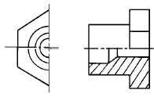
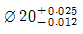
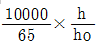
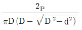
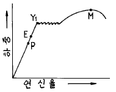

금속재료시험기능사 (2003-01-26 기출문제)
1과목: 금속재료일반
1. 금속을 냉간 가공하면 결정입자가 미세화되어 재료가 단단해 지는 현상은?
- 가공경화
- 열간연화
- 조직의 열화
- 청열메짐
(정답률: 89%)

2. 금속의 재결정에 관한 설명 중 틀린 것은?
- 순도가 낮고 가공시간이 짧을수록 재결정온도는 낮아진다.
- 가공도가 낮을수록 조대한 결정입자가된다.
- 재결정이 시작되는 온도는 금속에 따라 다르다.
- 재결정의 결정입자 크기는 주로 가공도에 의해 변화된다.
(정답률: 55%)
3. 금속의 동소변태에 관한 설명 중 옳지 않은 것은?
- 고체에 있어서의 결정격자의 변화이다.
- 고체에 있어서의 원자배열의 변화이다.
- 고체에 있어서의 자성의 변화이다.
- 급속히 비연속적으로 변화한다.
(정답률: 44%)
4. 비중 약2.7, 용융점 약660℃로 열전도도가 좋은 금속은?
- Aℓ
- Zr
- Ti
- V
(정답률: 83%)
5. 동일한 조건의 강에서 연신율(%)이 가장 큰 조직은?
- 마텐자이트
- 페라이트
- 펄라이트
- 시멘타이트
(정답률: 58%)
6. 황동의 특징 중 틀린 것은?
- 주조할 수 없다.
- 내식성이 좋다.
- 가공성이 좋다.
- 탄피 가공재에 좋다.
(정답률: 76%)
7. 다음 중 니켈크롬강은?
- KCM
- SNC
- SBC
- BNN
(정답률: 55%)
8. 18-8 스테인리스강에서 18 이 뜻하는 것은?
- Cr 함량
- Mn 함량
- Cu 함량
- Mg 함량
(정답률: 85%)
9. SM45C 의 탄소함유량(%)은 약 어느 정도인가?
- 0.02
- 0.17
- 0.25
- 0.45
(정답률: 89%)
10. 단조용 재료를 가열할 때 주의사항이 아닌 것은?
- 균일하게 가열할 것
- 너무 급하게 고온도로 가열하지 말것
- 너무 오래 가열하지 말것
- 재료 내부는 가열하지 말것
(정답률: 67%)
11. 전자공업에 많이 사용되는 반도체 원소는?
- Cu
- W
- Fe
- Ge
(정답률: 71%)
12. 라우탈의 주 성분 원소는?
- 알루미늄 - 구리 - 규소
- 납 - 규소 - 크롬
- 코발트 - 구리 - 인
- 구리 - 니켈 - 아연
(정답률: 82%)
13. 대포의 포신으로 사용하는 포금의 주 성분은?
- Cu - Sn - Zn
- Cu - Sb - Aℓ
- Cu - Zr - Ni
- Cu - Fe - Mn
(정답률: 55%)
14. 동일 조건에서 열전도율이 가장 큰 금속은?
- Au
- Ag
- Fe
- Pb
(정답률: 43%)
15. 금속의 결정에서 물질을 구성하고 있는 원자가 입체적으로 규칙적인 배열을 이루는 것은?
- 회복체
- 천이체
- 결정체
- 변성체
(정답률: 85%)
16. 다음 중 가는 실선을 사용하여 긋는 선은?
- 치수선
- 은선
- 가상선
- 외형선
(정답률: 70%)
17. 다음 중 반지름 치수를 나타내는 기호는?
- P
- t
- R
- C
(정답률: 88%)
18. 한국산업규격(KS)의 분류에서 금속 부분에 해당되는 기호는?
- D
- M
- B
- E
(정답률: 73%)
19. 그림과 같이 그려진 단면도의 종류는?

- 한쪽 단면도
- 온 단면도
- 부분 단면도
- 회전도시 단면도
(정답률: 50%)
20. 물체의 한면은 투상면에 나란하게 두어 투상하고, 윗면이나 측면은 경사시켜 입체적으로 도시하는 투상도는?
- 등각 투상도
- 사투상도
- 투시도
- 부등각 투상도
(정답률: 69%)
2과목: 금속제도
21. 현과 호에 대한 설명 중 옳은 것은?
- 호의 길이를 표시하는 치수선은 호에 평행인 직선으로 표시한다.
- 현의 길이를 표시하는 치수선은 그 현과 동심인 원호로 표시한다.
- 원호의 중심각이 45°가 넘을 때에는 각도의 크기를 숫자로 표시한다.
- 원호와 현을 구별해야 할 때에는 호의 치수숫자 위에 표시를 한다.
(정답률: 69%)
22. 가공방법의 약호와 설명이 잘못된 것은?
- FR - 리머 가공
- L - 선반 가공
- G - 연삭 가공
- M - 래핑 가공
(정답률: 79%)
23. 어떤 구멍의 치수가

이다. 이 구멍의 공차는?- 0.025
- 0.012
- 0.013
- 0.037
(정답률: 82%)
24. 도면의 표제란에 기입되는 사항이 아닌 것은?
- 척도
- 도면명칭
- 재질
- 도면번호
(정답률: 72%)
25. 재료기호 "S F 340 A" 에서 F 가 뜻하는 것은?
- 강
- 철
- 단조품
- 주조품
(정답률: 50%)
26. 기어의 도시 방법 설명으로 틀린 것은?
- 이끝원은 굵은 실선으로 그린다.
- 피치원은 굵은 이점쇄선으로 그린다.
- 이뿌리원은 가는 실선으로 그린다.
- 맞물린 기어의 이끝원은 모두 굵은 실선으로 그린다.
(정답률: 46%)
27. 도면의 치수기입에서 치수에 괄호를 한 것은?
- 비례척이 아닌 치수
- 완성 치수
- 정확한 치수
- 참고 치수
(정답률: 82%)
28. 비파괴적으로 재료의 두께를 측정 할 수 있는 방법은?
- 누설검사
- 침투법
- 인장시험법
- 초음파탐상법
(정답률: 79%)
29. 로크웰경도값(HRC)을 구하는 식은? (h : 압흔의 깊이, ho : 낙하의 높이, t : 홈의 두께, D : 압입자의 직경, d : 압흔의 직경, p : 하중)
- 100 - 500h
- 130 + 600 ㅿt


(정답률: 34%)
30. 모오스(Mohs)경도가 1 인 것은?
- 다이어몬드
- 황옥
- 활석
- 인회석
(정답률: 24%)
31. β 마텐자이트의 현미경 조직은?
- 면심입방정계의 층상 조직
- 조밀육방정계의 망상 조직
- 사방면심정계의 입상 조직
- 체심입방정계의 침상 조직
(정답률: 29%)
32. 조미니 시험은 강의 무엇을 보기위함 인가?
- 내부결함
- 연화정도
- 내부조직
- 경화능
(정답률: 59%)
33. 담금질 후 곧 액체공기와 드라이 아이스에서 처리하는 조작은?
- 용체화 처리
- 시효 처리
- 영하 처리
- 경화 처리
(정답률: 52%)
34. 강의 오스테나이트 결정입도 시험은 무엇으로 판정 하는가?
- 타음
- 침지액
- 현미경
- 가공조건
(정답률: 59%)
35. 강의 비금속 개재물 중 B 형 개재물에 속하는 것은?
- 알루미늄 산화물계
- 황화철 황화물계
- 인 중성물계
- 마그네슘 황화물계
(정답률: 60%)
36. 현미경조직에서 시편의 부식이란?
- 평탄하고 잘 반사되지 않는 조악한 가공 작업이다.
- 최종연마 작업에 의해 표층부에 점성층을 형성시키는 것이다.
- 최종연마 작업에 의하여 생긴 유동한 표층을 제거하는 것이다.
- 최종연마 작업에서 엷은 유동층을 형성시키는 것이다.
(정답률: 38%)
37. 강재의 파단검사에 대한 설명 중 맞는 것은?
- 파면의 목측 관찰을 할 수 없다.
- 파단은 냉간에서 행하는 일이 많다.
- 강질의 판정은 불가능하다.
- 탈탄, 침탄층 검사는 불가능하다.
(정답률: 46%)
38. 강의 매크로 조직내의 결함 표시 중 비금속 개재물 기호는?
- B
- T
- N
- D
(정답률: 39%)
39. 설퍼프린트 검사의 반응에서 흑색 또는 흑갈색을 나타내는 화합물은?
- PbO
- AgS
- H2O
- FeO
(정답률: 51%)
40. 육안 또는 10배 이내의 확대경으로 균열, 기공, 편석 등의 조직을 시험하는 것은?
- 라우에법
- 불꽃검사법
- 매크로 검사법
- 열분석법
(정답률: 79%)
3과목: 금속재료조직 및 비파괴시험
41. 응력-변형 곡선 중 영구변형이 생기지 않을 응력의 최대 값이 되는 점(탄성한계점)은?

- P점
- E점
- Y1점
- M점
(정답률: 38%)
42. 충격시험과 관련이 없는 것은?
- 영율
- 노치
- 흡수 에너지
- 각도
(정답률: 57%)
43. 제 1 단계 크리프의 설명 중 틀린 것은?
- 변형속도가 변화없이 일정한 과정이다.
- 변형 경화가 연화작용보다 크다.
- 변형속도가 감소된다.
- 초기 크리프에서 변률이 점차 감소되는 단계이다.
(정답률: 34%)
44. 평행부의 원지름이 12mm 이고 표점거리가 60mm 인 시험편이 절단되었을 때의 최대 인장하중이 2400kgf일 때 시험편의 인장강도(kgf/mm2)는?
- 약 12
- 약 16
- 약 21
- 약 30
(정답률: 42%)
45. 충격시험 방법으로 옳은 것은?
- 샤르피 충격시험법
- 스프링 압력시험법
- 리크 테스트 시험
- 티크니컬 인장시험법
(정답률: 80%)
46. 브리넬 경도시험에서 경도 측정 위치와 측정 간격은 압흔직경(D)의 몇 배로 하는가?
- 2.5배 안쪽과 4d 이상
- 3.5배 안쪽과 5d 이상
- 4.5배 안쪽과 7d 이상
- 5.5배 안쪽과 9d 이상
(정답률: 60%)
47. 비커스경도시험 방법에서 Pyramid diamond 의 면각은?
- 127°
- 136°
- 140°
- 165°
(정답률: 75%)
48. 시험편을 별도로 준비하지 않고 직접 제품에 시험할 수 있는 경도 시험은?
- 쇼어경도시험
- 브리넬경도시험
- 비커스경도시험
- 로크웰경도시험
(정답률: 65%)
49. 방사선 투과시험에서 사용되지 않는 것은?
- 증감지
- 계조계
- 노출시간표
- 형광침투액
(정답률: 77%)
50. 시험과정에서 선량에 의해 인체에 상해를 줄 가능성이 가장 많은 시험은?
- 와전류탐상 시험
- 자분탐상시험
- 초음파탐상 시험
- 감마선투과 시험
(정답률: 71%)
51. 시험품의 표면에 침투액을 바르면 흠이 있는 속에 침투액이 스며 들어 가는 처리를 무엇이라고 하는가?
- 관찰처리
- 용해처리
- 침투처리
- 세정처리
(정답률: 83%)
52. 고압가스 탱크 등의 가스유출의 유무를 시험하는 비파괴검사로 가장 적합한 것은?
- 누설검사
- 과전압검사
- 수침검사
- 에릭션검사
(정답률: 89%)
53. 와전류 탐상시험의 기본원리는 무슨 현상을 이용한 것인가?
- 전자유도
- 속도효과
- 압력차이
- 경도결과
(정답률: 73%)
54. 강재의 그라인더 불꽃시험으로 감별이 가능한 것은?
- 비중과 내식성
- 강도와 비열
- 결정과 가공조직
- 탄소량과 강의 종류
(정답률: 51%)
55. 강재의 결정조직 상태나 가공방향 등을 검사하려면 어떤시험이 좋은가?
- 매크로 조직검사
- 쇼트 피닝시험
- 형광 침투탐상
- 충격 시험법
(정답률: 65%)
56. 불꽃시험용 그라인더에 설치되어 있는 정지 스위치의 색깔은?
- 빨간색
- 흰색
- 녹색
- 검정색
(정답률: 83%)
57. 산업안전 표지의 종류에 해당되지 않는 것은?
- 금지표지
- 경고표지
- 세금표지
- 안내표지
(정답률: 74%)
58. 방사선 물질을 취급할 때 예방 대책이 아닌 것은?
- 방사선원과 취급자 사이의 거리를 멀리한다.
- 방사선원과 취급자 사이에 방해 물질을 놓는다.
- 방사선의 쬐임시간을 길게 한다.
- 방사선 장치는 진동이 없는 장소에 설치한다.
(정답률: 66%)
59. 전기 가열로의 누전으로 인한 재해를 방지하기 위하여 설치하는 전기 공사는?
- 접지 공사
- 안내 표지판 공사
- 동선 매설 공사
- 승압 공사
(정답률: 75%)
60. 안전보호구의 선택시 유의 하여야 할 사항이 아닌 것은?
- 무게가 무겁고 크기는 사용자에게 조금 커야 한다.
- 사용하는 방법이 간편하고 손질하기가 쉬워야 한다.
- 보호구 검정에 합격된 품질이 좋은 것이어야 한다.
- 사용 목적에 적합하여야 한다.
(정답률: 85%)